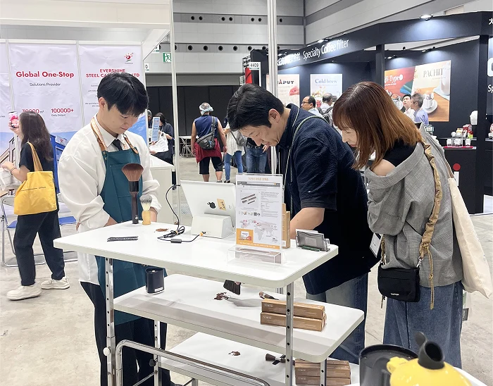

시흥 은성교역과 함께한 도쿄 커피 전시회
세계 스페셜티 커피 전시회 SCAJ

- 기간
- 2026.10.14–10.17
- 장소
- 도쿄
- 참여 기업
- 은성교역
현장에서 한 일
이재훈 학생이 시흥 기업 은성교역의 부스에서 제품을 직접 시연했습니다. 현지 고객을 응대하고 해외 바이어와의 상담을 지원했습니다.
확인된 결과
바이어 상담 15건 이상, 현장 판매 약 4만 엔.
참여 학생의 경험
이재훈 학생은 외국어로 바이어를 응대하며 고객의 관심을 끄는 제품 소개 방법을 고민했다고 전했습니다.
출처: 한국공학대학교 대학소식
전체 기록 보기